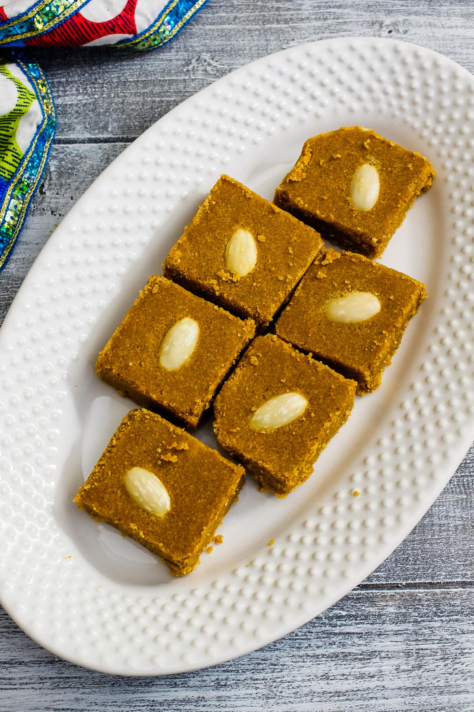
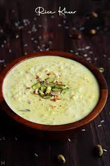

Gulab Jamun
Ingredients
- Sugar
- bread
- Oil
Recipe
- In a large bowl, stir together the milk powder,
flour, baking powder, and cardamom.Stir in the almonds, pistachios and golden raisins. Mix in the melted
ghee, then pour in the milk, and continue to mix until well blended. Cover and let rest for 20 minutes. - In a large skillet, stir together the sugar, water, rose water and a pinch of cardamom.
Bring to a boil, and simmer for just a minute. Set aside. - Fill a large heavy skillet halfway with oil.
Heat over medium heat for at least 5 minutes.
Knead the dough, and form into about 20 small balls.
Reduce the heat of the oil to low, and fry the balls in one or two batches.
After about 5 minutes, they will start to float, and expand to twice their original size, but the color will
not change much. After the jamun float, increase the heat to medium, and turn them frequently until light golden.
Remove from the oil to paper towels using a slotted spoon, and allow to cool. Drain on paper towels and allow to cool slightly. - Place the balls into the skillet with the syrup. Simmer over medium heat for about 5 minutes,
squeezing them gently to soak up the syrup. Serve immediately, or chill.

Barfi
Ingredients
- 1 cup ghee
- 2 tbsp suji / semolina
- 3 cup besan
- 1½ cup sugar
- pinch saffron food colour
- ¼ tsp cardamom powder
Recipe
- Firstly, in a large kadai heat 1 cup ghee and
add 3 cup besan. Mix the besan until the
besan is well combined. Besan starts to
absorb ghee from the besan. - Add 2 tbsp suji and mix well.
continue to roast
the besan on low flame for 30 minutes. after
30 minutes, the besan starts to release ghee.
Roast until the besan turns golden brown and
silky smooth consistency - In a large kadai take 1½ cup sugar and ½ cup
water. stir and dissolve the sugar. continue
to boil for 1 string consistency. - Now add pinch saffron food colour and ¼ tsp cardamom powder. mix well making sure everything is well combined.
- Now add roasted besan and mix well. make sure to keep the flame on low or turn it off. mix until the mixture is well combined.
- Rest for 30 minutes, or until the burfi sets. cut into pieces of your desired shape.

Kheer (Rice Pudding)
Ingredients
- Sugar
- Milk
- Rice
- Dry-Fruits
Recipe
- Bring coconut milk, milk, and sugar to a boil in a large saucepan over medium heat.
- Add rice, reduce the heat to low, and simmer until mixture thickens and rice is tender, about 20 minutes.
- Stir in raisins, cardamom, and rose water; cook for a few more minutes.
- Ladle into serving bowls and garnish with almonds and pistachios.

Mango Lassi
Ingredients
- Chopped Mangoes
- Fresh curd
- Cold Milk
- Powdered sugar
Recipe
- To make a mango lassi,combine all the ingredients and blend in a mixer till its smooth and frothy.
- Pour the mango lassi and garnish with required dry fruits and chopped mangoes.